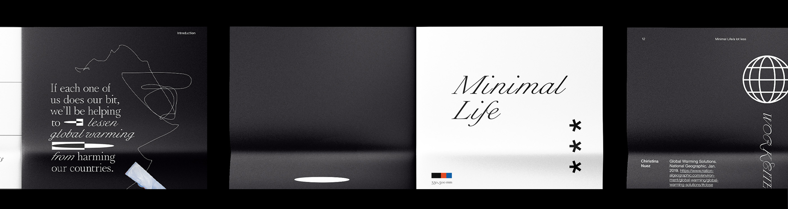

Minimal Life
Print, Typography
Continuously witnessing the environmental change, I wanted to deliver that living minimally will not only benefit the environment but also can be adapted as a stylistic movement. Each page represents the expression of deduction, substitution, and redaction. I chose recycled newsprint to deliver the message more physically.
Software Used
Adobe Creative Suite